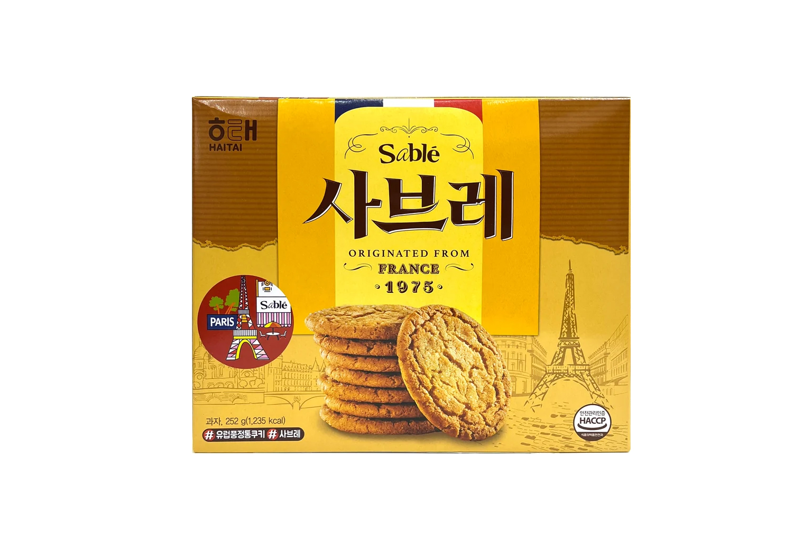

사브레
해태 사브레 — 바삭한 프랑스식 스타일 버터 쿠키, 장수 스테디셀러.
사브레는 해태제과의 대표 쿠키로, 바삭한 식감과 은은한 단맛·버터 풍미가 특징입니다. 마트·편의점 과자 코너에서 상자·묶음으로 쉽게 찾을 수 있습니다.
커피·차와 잘 맞고, 너무 달지 않아 어른 선물로도 무난합니다. 깨지기 쉬우니 완충이 있는 포장을 고르세요.
사브레는 해태제과의 대표 쿠키로, 바삭한 식감과 은은한 단맛·버터 풍미가 특징입니다. 마트·편의점 과자 코너에서 상자·묶음으로 쉽게 찾을 수 있습니다.
커피·차와 잘 맞고, 너무 달지 않아 어른 선물로도 무난합니다. 깨지기 쉬우니 완충이 있는 포장을 고르세요.
사는 팁
구매 팁 ‘해태 사브레’ 표기를 확인하세요. 대형마트 묶음이 편의점보다 저렴한 경우가 많습니다.